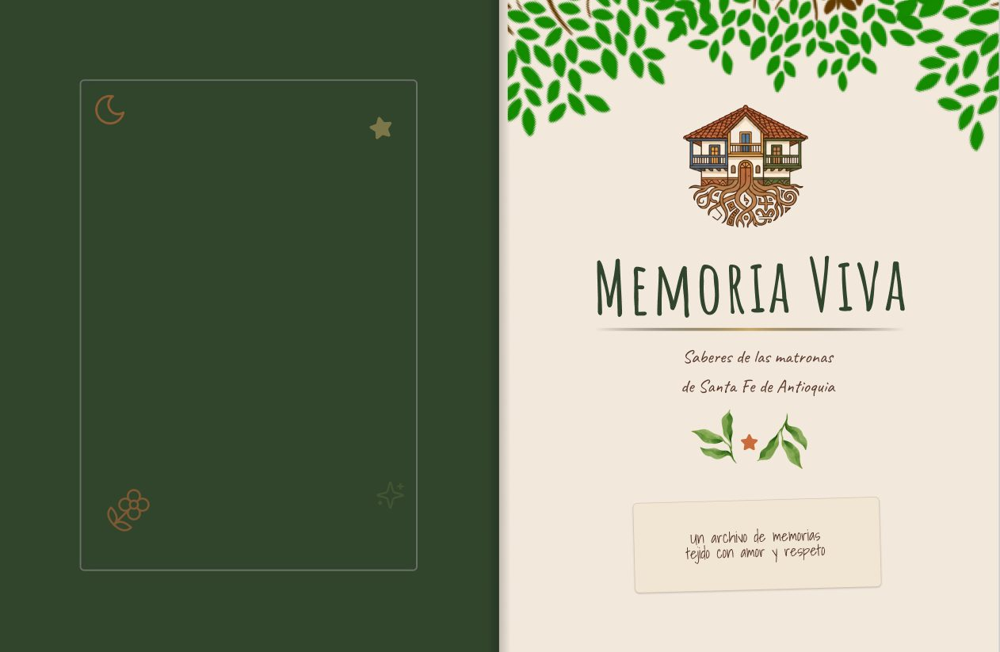
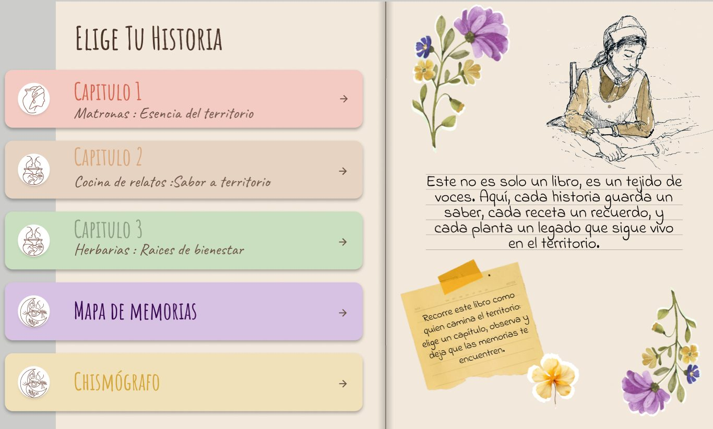
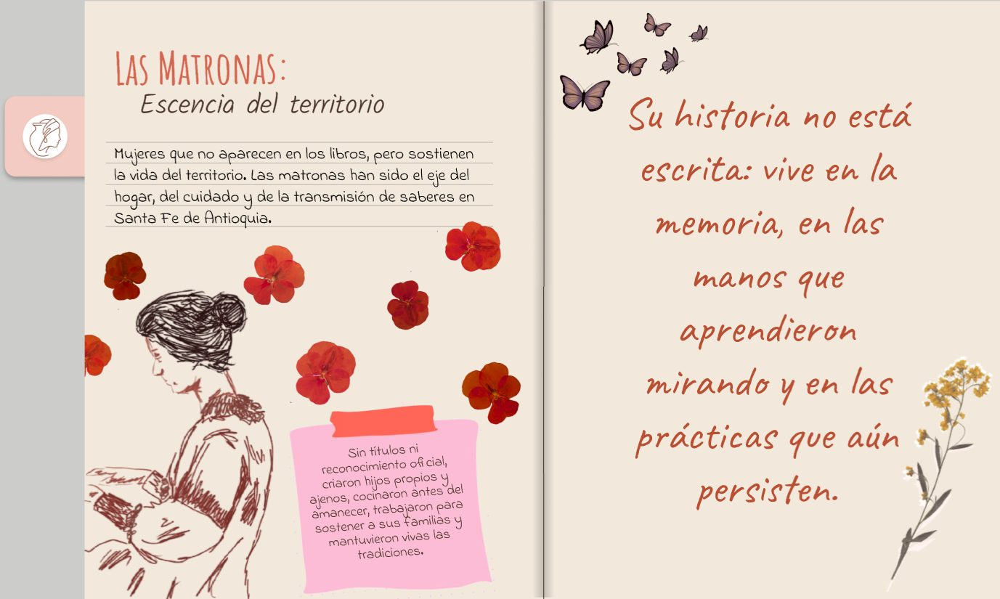
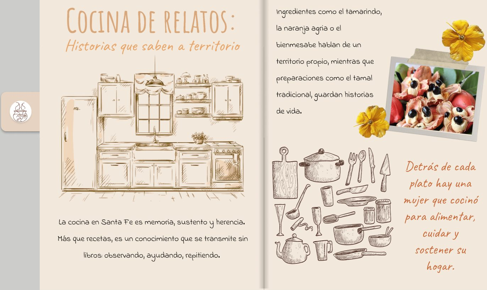
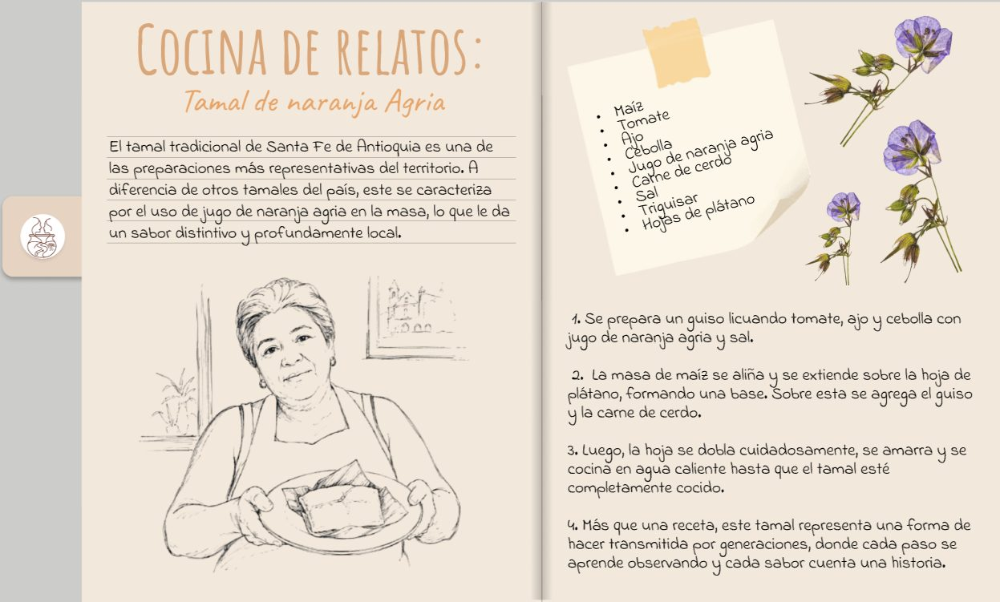
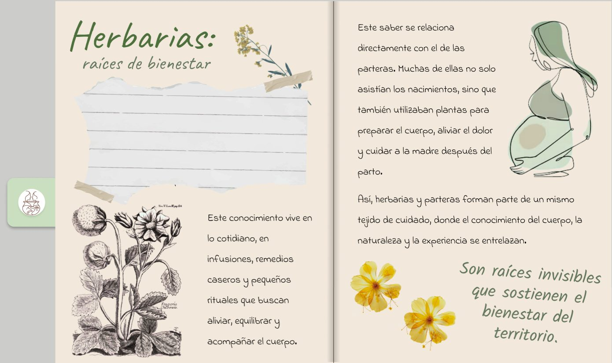
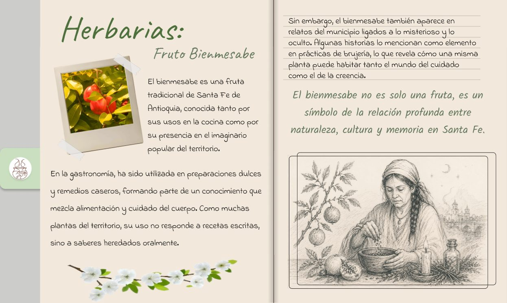

← Trabajo seleccionadoCaso de estudio · 02
Memoria Viva
Un libro digital que le devuelve la voz a las matronas de Santa Fe de Antioquia.

¿Cómo darle voz a una memoria que no está en las vitrinas?
El problema
El museo cuenta la historia oficial: próceres, fechas y documentos. Pero la memoria que la comunidad conserva, la de la cocina, la crianza y los relatos orales, casi no aparece. Por eso mucha gente lo siente como un lugar turístico y ajeno.
Pregunta de diseño
¿Cómo convertir el relato cotidiano de las matronas en una experiencia interactiva que conecte a la comunidad con el museo, sin perder rigor histórico?
Trabajo de campo en Santa Fe de Antioquia
Salir a escuchar antes de diseñar.
Ir al territorio
Viajamos a Santa Fe de Antioquia y conversamos con una vendedora tradicional, con una integrante del museo y con tres habitantes, además de registrar el recorrido en fotos.
Las barreras son simbólicas
Lo que aleja a la gente del museo no es el costo ni el acceso, sino que su vida cotidiana no se ve reflejada en las salas.
Lo que sí conecta
Los relatos personales y los objetos de la casa, como el fogón, los utensilios y las fotos antiguas, generan mucho más vínculo que los símbolos políticos.
Lo que nos dijo el territorio
Cinco ideas que guiaron el producto.
01Reconocerse en la historia
Identidad
Lo que vimos
La gente se conecta más cuando el relato es personal o doméstico.
Insight
La memoria se activa cuando el visitante se reconoce en la historia, no solo cuando la aprende.
02Memoria oficial y memoria vivida
Brecha
Lo que vimos
Las matronas guardan memoria viva, pero el museo pone el énfasis en próceres y fechas.
Insight
Entre la memoria oficial y la vivida hay una brecha que puede convertirse en oportunidad narrativa.
03Objetos que activan recuerdos
Objetos
Lo que vimos
Los objetos domésticos generan más vínculo emocional que los símbolos políticos abstractos.
Insight
Los objetos no conectan por su antigüedad, sino por su capacidad de despertar recuerdos personales.
04Quienes son jóvenes piden participar
Públicos
Lo que vimos
El público joven no se siente tan convocado: la experiencia es contemplativa, no participativa.
Insight
Sin interacción, la memoria se percibe como un pasado estático y no como una construcción colectiva.
05Una identidad que sigue viva
Orgullo
Lo que vimos
La comunidad siente un profundo orgullo por su identidad local.
Insight
La identidad santafereña no está solo en las vitrinas: está en las prácticas que todavía se ejercen.
15 semanas
De la conversación al prototipo.
- 015 semanas
Investigación y síntesis
Hipótesis sobre el museo, fuentes secundarias y entrevistas en Santa Fe. Después, patrones y análisis de lo encontrado.
- 022 semanas
Selección del producto
Síntesis de hallazgos para identificar los hitos de memoria viva y los oficios no oficiales, y luego ideación del producto.
- 032 semanas
Prototipo alfa
Un diseño simplificado para mostrar sobre todo la funcionalidad.
- 043 semanas
Testeos de usabilidad
Pruebas con usuarios clave. La gente entendía qué había que hacer; los ajustes fueron sobre todo de interfaz.
- 053 semanas
Prototipo final
La versión final del libro, con las mejoras de los testeos.
La solución
Un libro que se recorre como el territorio.
«Este no es solo un libro, es un tejido de voces. Cada historia guarda un saber, cada receta un recuerdo.»
Elige tu historia
Un índice con tres capítulos, Matronas, Cocina de relatos y Herbarias, más un Mapa de memorias. Cada uno tiene su color y se siente como pasar las páginas de un libro de verdad.
Chismógrafo
Al final, quien recorre el libro deja su propia historia o su chisme. Es una forma de vivir la experiencia de ser matrona, y lo escrito queda guardado para siempre.
Página web
Una web que cuenta el proyecto, con una página para el libro y otra para el Chismógrafo, y que lleva la experiencia más allá del museo.






Director de producto y UX research · colíder
Del territorio al producto.
Mi trabajo fue capturar la memoria local y transformarla en un producto interactivo, cuidando que la tecnología respondiera a lo que las personas necesitaban.
Definir la idea
Ayudé a sentar las bases del proyecto: qué iba a ser, para quién y por qué.
Investigar en campo
Viajé a Santa Fe de Antioquia, hice entrevistas y conversé con la gente para descubrir qué debía ser el producto.
Acompañar la interfaz
Trabajé de la mano con Ana Sofía, diseñadora UI/UX, y ayudé a coordinar la ejecución del diseño.
Seis personas, un mismo libro.
Simon Burgos
Director general
Santiago Velasco
Programador y director técnico
Ana Sofía Misas
Animadora, artista conceptual y diseñadora UI/UX
Felipe González
Animador, diseñador y modelador 3D
Juan Sebastián González
Director de producto y UX research, colíder
Luis Fernando Parra
Investigador y consultor social
Siguiente
Volver a todos los proyectos →